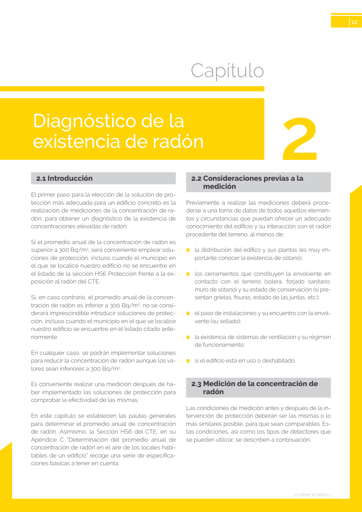

<!doctype html>
<html lang="es"><head><meta charset="utf-8">
<meta name="viewport" content="width=device-width, initial-scale=1">
<title>GUIA · Página física 12</title><link rel="stylesheet" href="../estilo.css">
</head><body>
<nav><a href="../index.html">Índice</a> › <a href="../doc/guia-pdf-23d2f2198c3b-sin-fecha-6765d0c34c51.html">GUIA</a></nav>

<h1>GUIA · Página física 12</h1>
<header class="meta"><p><strong>Guia de rehabilitacion frente al radon</strong> · edición sin-fecha · capa guia</p>
<p>Documento <code>GUIA-PDF-23d2f2198c3b</code> · SHA-256 del PDF <code>6765d0c34c51fbe193c3ed0c1378b710f98f086d16e2b68fc28ed36e143fdaea</code></p>
<p>Página física 12 de 24.</p>
<p><a href="../../contenido/docs/GUIA-PDF-23d2f2198c3b/sin-fecha__6765d0c34c51/fuente.pdf#page=12">Copia fiel del PDF fuente</a> · <a href="https://www.codigotecnico.org/pdf/GuiasyOtros/GuiaRadon/Guia_de_rehabilitacion_frente_al_radon.pdf">Fuente oficial</a></p>
<p><a href="https://www.codigotecnico.org/Guias/GuiaRadon.html">Ficha de la disposición en la fuente oficial</a></p>
<div class="cita"><p><a href="../../contenido/docs/GUIA-PDF-23d2f2198c3b/sin-fecha__6765d0c34c51/fuente.pdf#page=2">Créditos y autoría en el PDF fuente</a>. Reproducción con cita de fuente y autores.</p>
<p>Permiso literal: Se permite la reproducción total o parcial del contenido de este do­ Edición actual: septiembre 2020 cumento siempre y cuando se cite la fuente original y a sus autores.</p>
<details><summary>Leer los créditos completos y la autoría</summary><pre class="literal">                                                                                                  2


                                                                     Este documento ha sido elaborado por el Instituto de ciencias
                                                         de la construcción Eduardo Torroja (IETcc) bajo la supervisión
                                                         de la Dirección General de Agenda Urbana y Arquitectura del
                                                                             Ministerio de Transportes, Movilidad y Agenda Urbana (MITMA).

                                                             SECRETARÍA GENERAL DE
                                                  AGENDA URBANA                                                                     Y VIVIENDA                              MINISTERIO            GOBIERNO                                                                              El IETcc, perteneciente al Consejo Superior de Investigaciones                          DE                               TRANSPORTES,                                          MOVILIDAD
            DE ESPAÑA      Y                         AGENDA                                URBANA                                                        DIRECCIÓN                                                                GENERAL                                                                      DE
                                                  AGENDA URBANA Y ARQUITECTURA                   Científicas (CSIC), es el centro de investigación en edificación
                                                         de referencia en España. La Unidad de Calidad en la Construc­
                                                                       ción del IETcc asesora al MITMA en la elaboración del Código
                              MINISTERIO            GOBIERNO                         DE                               CIENCIA                                             Técnico de la Edificación que, desde el año 2019, cuenta con la            DE ESPAÑA                                E INNOVACIÓN
                                                                   sección HS6 Protección frente a la exposición al radón.

                                                                    Dirección y Coordinación:
                                                                            Ministerio de Transportes, Movilidad y Agenda Urbana
                                                                           Isabel Marcos Anasagasti
Esta publicación está formada por una serie de documentos cuyo       Raquel Lara Campos
objetivo es constituir una herramienta de ayuda para el diseño de       Eduardo González de Prado
soluciones de protección frente al radón:                                    Instituto de ciencias de la construcción Eduardo Torroja CSIC
                                                                                      Pilar Linares Alemparte
■  Guía de rehabilitación frente al radón

Fichas de soluciones:                                                 Autoras:
                                                                                      Pilar Linares Alemparte
A: De aislamiento del edificio                                                                   Sonia García Ortega
■       Solución A1. Barrera frente al radón
■       Solución A1-1. Barrera frente al radón. Encuentros              Colaboradoras:
■       Solución A2. Sellado de fisuras, grietas, encuentros y juntas         Virginia Sánchez Ramos
■       Solución A3. Puertas estancas                                   Karina Angélica García Pardo
■       Solución A4. Creación de sobrepresión
                                                                               Edita:
B: De reducción del radón antes de que penetre en los locales       Centro de Publicaciones Secretaría General Técnica
  a proteger                                                               Ministerio de Transportes, Movilidad y Agenda Urbana©

■       Solución B1. Ventilación del espacio de contención: cá­                                                                  Entidad colaboradora:
                 mara de aire                                                                Consejo Superior de Investigaciones Científicas · CSIC
■       Solución B2. Ventilación del espacio de contención: loca­                                                                             Ministerio de Ciencia e Innovación
                      les no habitables
■       Solución B3. Despresurización del terreno                        Catálogo de publicaciones de la Administración General
                                                                         del Estado: publicacionesoficiales.boe.es
C: De reducción del radón tras penetrar en los locales a proteger
■       Solución C1. Ventilación de los locales habitables                  Centro virtual de publicaciones del Ministerio de Transpor­
                                                                                         tes, Movilidad y Agenda Urbana: www.mitma.gob.es

Fichas de ejemplos:
                                                                     Página web del Código Técnico de la Edificación:
■      Ejemplo A1+B3. Barrera frente al radón + despresurización          www.codigotecnico.org
                    con red de tubos
■      Ejemplo A2+B1. Sellado + ventilación de la cámara sanitaria      Maquetación y diseño gráfico:
■      Ejemplo A2+B3. Sellado + despresurización con red de tubos       Lapizmente. Estrategia • Diseño Gráfico
■      Ejemplo A2+C1. Sellado + ventilación mecánica de los loca-                                                                     Los contenidos o ideas recogidas en este documento pertenecen a
                          les habitables                                   sus autores. Este documento está basado en el conocimiento dispo­
                                                                                    nible en el momento de su publicación. No se aceptará por las institu­
Publicación completa:                                                    ciones ni los autores implicados responsabilidad de ningún tipo por el
ISBN: 978-84-498-1045-9                                             uso de estas recomendaciones. Las figuras tienen carácter ilustrativo
NIPO: 796-20-136-5                                                   y no deben interpretarse como detalles constructivos.
1ª edición: septiembre 2020                                                               Se permite la reproducción total o parcial del contenido de este do­
Edición actual: septiembre 2020                                    cumento siempre y cuando se cite la fuente original y a sus autores.


                                                                                                                          &gt;&gt; volver al índice &gt;</pre></details></div>
<div class="aviso"><strong>Alcance y límites</strong><ul><li>Extracción automática sin revisión técnica humana completa. Contraste tablas, fórmulas, notas y excepciones con el PDF. La edición disponible no determina la vigencia ni la aplicabilidad a un proyecto.</li><li>Guia o documento divulgativo; no es texto normativo.</li><li>Extracción automática; el cotejo humano está pendiente.</li><li>Semántica y tablas no equivalen a validación exhaustiva.</li></ul></div></header>
<nav><a href="guia-pdf-23d2f2198c3b-sin-fecha-6765d0c34c51__p0011.html">← Página 11</a> · <a href="guia-pdf-23d2f2198c3b-sin-fecha-6765d0c34c51__p0013.html">Página 13 →</a></nav>
<p>Formato: <a href="../../contenido/docs/GUIA-PDF-23d2f2198c3b/sin-fecha__6765d0c34c51/pagina/p0012.md">Texto de la página (Markdown)</a></p>
<p><a href="../../contenido/docs/GUIA-PDF-23d2f2198c3b/sin-fecha__6765d0c34c51/bloque/p0012.json">JSON de bloques</a></p>
<pre class="literal">&gt;&gt; volver al índice &gt;
12
2.1 Introducción
El primer paso para la elección de la solución de pro­
tección más adecuada para un edificio concreto es la 
realización de mediciones de la concentración de ra­
dón, para obtener un diagnóstico de la existencia de 
concentraciones elevadas de radón.
Si el promedio anual de la concentración de radón es 
superior a 300 Bq/m3, será conveniente emplear solu­
ciones de protección, incluso cuando el municipio en 
el que se localice nuestro edificio no se encuentre en 
el listado de la sección HS6 Protección frente a la ex­
posición al radón del CTE.
Si, en caso contrario, el promedio anual de la concen­
tración de radón es inferior a 300 Bq/m3, no se consi­
derará imprescindible introducir soluciones de protec­
ción, incluso cuando el municipio en el que se localice 
nuestro edificio se encuentre en el listado citado ante­
riormente.
En cualquier caso, se podrán implementar soluciones 
para reducir la concentración de radón aunque los va­
lores sean inferiores a 300 Bq/m3.
Es conveniente realizar una medición después de ha­
ber implementado las soluciones de protección para 
comprobar la efectividad de las mismas.
En este capítulo se establecen las pautas generales 
para determinar el promedio anual de concentración 
de radón. Asimismo, la Sección HS6 del CTE, en su 
Apéndice C “Determinación del promedio anual de 
concentración de radón en el aire de los locales habi­
tables de un edificio” recoge una serie de especifica­
ciones básicas a tener en cuenta.
2.2 Consideraciones previas a la 
medición
Previamente a realizar las mediciones deberá proce­
derse a una toma de datos de todos aquellos elemen­
tos y circunstancias que puedan ofrecer un adecuado 
conocimiento del edificio y su interacción con el radón 
procedente del terreno, al menos de:
	
■
la distribución del edifico y sus plantas (es muy im­
portante conocer la existencia de sótano);
	
■
los cerramientos que constituyen la envolvente en 
contacto con el terreno (solera, forjado sanitario, 
muro de sótano) y su estado de conservación (si pre­
sentan grietas, fisuras, estado de las juntas, etc.);
	
■
el paso de instalaciones y su encuentro con la envol­
vente (su sellado);
	
■
la existencia de sistemas de ventilación y su régimen 
de funcionamiento; 
	
■
si el edificio está en uso o deshabitado.
2.3 Medición de la concentración de 
radón
Las condiciones de medición antes y después de la in­
tervención de protección deberán ser las mismas o lo 
más similares posible, para que sean comparables. Es­
tas condiciones, así como los tipos de detectores que 
se pueden utilizar, se describen a continuación.
Diagnóstico de la 
existencia de radón
Capítulo
2
</pre>
<figure><a href="../../contenido/docs/GUIA-PDF-23d2f2198c3b/sin-fecha__6765d0c34c51/figura/p0012.png"></a><figcaption>Página visual 12, para contrastar fórmulas, tablas y figuras.</figcaption></figure><h2>Tablas extraídas</h2><p>Datos candidatos: compruebe celdas y notas en el PDF.</p><ul><li><a href="../../contenido/docs/GUIA-PDF-23d2f2198c3b/sin-fecha__6765d0c34c51/tabla/p0012_t01.json">p0012_t01.json</a></li></ul>
<h2>Segmentos que incluyen esta página</h2><ul>
<li><a href="../apartado/guia-pdf-23d2f2198c3b-sin-fecha-6765d0c34c51__a0030.html">a0030 · 8 	 escalera abierta / 1.3 ¿Cuáles son los principales factores influyentes en la entrada y acumulación de radón proveniente del terreno? / La climatología</a></li>
<li><a href="../apartado/guia-pdf-23d2f2198c3b-sin-fecha-6765d0c34c51__a0031.html">a0031 · 8 	 escalera abierta / 2.1 Introducción</a></li>
<li><a href="../apartado/guia-pdf-23d2f2198c3b-sin-fecha-6765d0c34c51__a0032.html">a0032 · Apéndice C “Determinación del promedio anual de concentración de radón en el aire de los locales habi­</a></li>
<li><a href="../apartado/guia-pdf-23d2f2198c3b-sin-fecha-6765d0c34c51__a0033.html">a0033 · Apéndice C “Determinación del promedio anual de concentración de radón en el aire de los locales habi­ / 2.2 Consideraciones previas a la medición</a></li>
<li><a href="../apartado/guia-pdf-23d2f2198c3b-sin-fecha-6765d0c34c51__a0034.html">a0034 · Apéndice C “Determinación del promedio anual de concentración de radón en el aire de los locales habi­ / 2.3 Medición de la concentración de radón</a></li>
<li><a href="../apartado/guia-pdf-23d2f2198c3b-sin-fecha-6765d0c34c51__a0035.html">a0035 · Diagnóstico de la existencia de radón</a></li>
<li><a href="../apartado/guia-pdf-23d2f2198c3b-sin-fecha-6765d0c34c51__a0036.html">a0036 · Capítulo</a></li>
</ul>
<footer>Generado estáticamente desde el corpus normalizado; sin JavaScript ni servicios externos. El HTML es una vista reproducible; conserve la fuente y la edición al citar.</footer>
</body></html>
